print("Welcome to Machine Learning!")Welcome to Machine Learning!Chapter 2 – End-to-end Machine Learning project
This notebook contains all the sample code and solutions to the exercises in chapter 2.
|
|

|
print("Welcome to Machine Learning!")Welcome to Machine Learning!This project requires Python 3.7 or above:
import sys
assert sys.version_info >= (3, 7)It also requires Scikit-Learn ≥ 1.0.1:
from packaging import version
import sklearn
assert version.parse(sklearn.__version__) >= version.parse("1.0.1")Welcome to Machine Learning Housing Corp.! Your task is to predict median house values in Californian districts, given a number of features from these districts.
from pathlib import Path
import pandas as pd
import tarfile
import urllib.request
def load_housing_data():
tarball_path = Path("datasets/housing.tgz")
if not tarball_path.is_file():
Path("datasets").mkdir(parents=True, exist_ok=True)
url = "https://github.com/ageron/data/raw/main/housing.tgz"
urllib.request.urlretrieve(url, tarball_path)
with tarfile.open(tarball_path) as housing_tarball:
housing_tarball.extractall(path="datasets")
return pd.read_csv(Path("datasets/housing/housing.csv"))
housing = load_housing_data()housing.head()| longitude | latitude | housing_median_age | total_rooms | total_bedrooms | population | households | median_income | median_house_value | ocean_proximity | |
|---|---|---|---|---|---|---|---|---|---|---|
| 0 | -122.23 | 37.88 | 41.0 | 880.0 | 129.0 | 322.0 | 126.0 | 8.3252 | 452600.0 | NEAR BAY |
| 1 | -122.22 | 37.86 | 21.0 | 7099.0 | 1106.0 | 2401.0 | 1138.0 | 8.3014 | 358500.0 | NEAR BAY |
| 2 | -122.24 | 37.85 | 52.0 | 1467.0 | 190.0 | 496.0 | 177.0 | 7.2574 | 352100.0 | NEAR BAY |
| 3 | -122.25 | 37.85 | 52.0 | 1274.0 | 235.0 | 558.0 | 219.0 | 5.6431 | 341300.0 | NEAR BAY |
| 4 | -122.25 | 37.85 | 52.0 | 1627.0 | 280.0 | 565.0 | 259.0 | 3.8462 | 342200.0 | NEAR BAY |
housing.info()<class 'pandas.DataFrame'>
RangeIndex: 20640 entries, 0 to 20639
Data columns (total 10 columns):
# Column Non-Null Count Dtype
--- ------ -------------- -----
0 longitude 20640 non-null float64
1 latitude 20640 non-null float64
2 housing_median_age 20640 non-null float64
3 total_rooms 20640 non-null float64
4 total_bedrooms 20433 non-null float64
5 population 20640 non-null float64
6 households 20640 non-null float64
7 median_income 20640 non-null float64
8 median_house_value 20640 non-null float64
9 ocean_proximity 20640 non-null str
dtypes: float64(9), str(1)
memory usage: 1.6 MBhousing["ocean_proximity"].value_counts()ocean_proximity
<1H OCEAN 9136
INLAND 6551
NEAR OCEAN 2658
NEAR BAY 2290
ISLAND 5
Name: count, dtype: int64housing.describe()| longitude | latitude | housing_median_age | total_rooms | total_bedrooms | population | households | median_income | median_house_value | |
|---|---|---|---|---|---|---|---|---|---|
| count | 20640.000000 | 20640.000000 | 20640.000000 | 20640.000000 | 20433.000000 | 20640.000000 | 20640.000000 | 20640.000000 | 20640.000000 |
| mean | -119.569704 | 35.631861 | 28.639486 | 2635.763081 | 537.870553 | 1425.476744 | 499.539680 | 3.870671 | 206855.816909 |
| std | 2.003532 | 2.135952 | 12.585558 | 2181.615252 | 421.385070 | 1132.462122 | 382.329753 | 1.899822 | 115395.615874 |
| min | -124.350000 | 32.540000 | 1.000000 | 2.000000 | 1.000000 | 3.000000 | 1.000000 | 0.499900 | 14999.000000 |
| 25% | -121.800000 | 33.930000 | 18.000000 | 1447.750000 | 296.000000 | 787.000000 | 280.000000 | 2.563400 | 119600.000000 |
| 50% | -118.490000 | 34.260000 | 29.000000 | 2127.000000 | 435.000000 | 1166.000000 | 409.000000 | 3.534800 | 179700.000000 |
| 75% | -118.010000 | 37.710000 | 37.000000 | 3148.000000 | 647.000000 | 1725.000000 | 605.000000 | 4.743250 | 264725.000000 |
| max | -114.310000 | 41.950000 | 52.000000 | 39320.000000 | 6445.000000 | 35682.000000 | 6082.000000 | 15.000100 | 500001.000000 |
The following cell is not shown either in the book. It creates the images/end_to_end_project folder (if it doesn’t already exist), and it defines the save_fig() function which is used through this notebook to save the figures in high-res for the book.
# extra code – code to save the figures as high-res PNGs for the book
IMAGES_PATH = Path() / "images" / "end_to_end_project"
IMAGES_PATH.mkdir(parents=True, exist_ok=True)
def save_fig(fig_id, tight_layout=True, fig_extension="png", resolution=300):
path = IMAGES_PATH / f"{fig_id}.{fig_extension}"
if tight_layout:
plt.tight_layout()
plt.savefig(path, format=fig_extension, dpi=resolution)import matplotlib.pyplot as plt
# extra code – the next 5 lines define the default font sizes
plt.rc('font', size=14)
plt.rc('axes', labelsize=14, titlesize=14)
plt.rc('legend', fontsize=14)
plt.rc('xtick', labelsize=10)
plt.rc('ytick', labelsize=10)
housing.hist(bins=50, figsize=(12, 8))
save_fig("attribute_histogram_plots") # extra code
plt.show()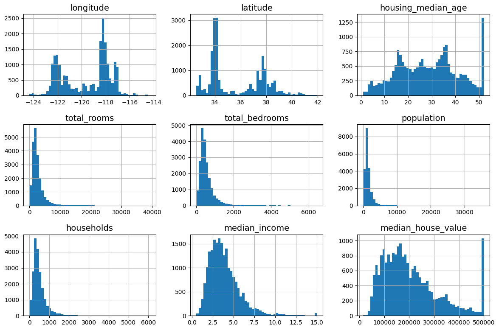
import numpy as np
def shuffle_and_split_data(data, test_ratio):
shuffled_indices = np.random.permutation(len(data))
test_set_size = int(len(data) * test_ratio)
test_indices = shuffled_indices[:test_set_size]
train_indices = shuffled_indices[test_set_size:]
return data.iloc[train_indices], data.iloc[test_indices]train_set, test_set = shuffle_and_split_data(housing, 0.2)
len(train_set)16512len(test_set)4128To ensure that this notebook’s outputs remain the same every time we run it, we need to set the random seed:
np.random.seed(42)Sadly, this won’t guarantee that this notebook will output exactly the same results as in the book, since there are other possible sources of variation. The most important is the fact that algorithms get tweaked over time when libraries evolve. So please tolerate some minor differences: hopefully, most of the outputs should be the same, or at least in the right ballpark.
Note: another source of randomness is the order of Python sets: it is based on Python’s hash() function, which is randomly “salted” when Python starts up (this started in Python 3.3, to prevent some denial-of-service attacks). To remove this randomness, the solution is to set the PYTHONHASHSEED environment variable to "0" before Python even starts up. Nothing will happen if you do it after that. Luckily, if you’re running this notebook on Colab, the variable is already set for you.
from zlib import crc32
def is_id_in_test_set(identifier, test_ratio):
return crc32(np.int64(identifier)) < test_ratio * 2**32
def split_data_with_id_hash(data, test_ratio, id_column):
ids = data[id_column]
in_test_set = ids.apply(lambda id_: is_id_in_test_set(id_, test_ratio))
return data.loc[~in_test_set], data.loc[in_test_set]housing_with_id = housing.reset_index() # adds an `index` column
train_set, test_set = split_data_with_id_hash(housing_with_id, 0.2, "index")housing_with_id["id"] = housing["longitude"] * 1000 + housing["latitude"]
train_set, test_set = split_data_with_id_hash(housing_with_id, 0.2, "id")from sklearn.model_selection import train_test_split
train_set, test_set = train_test_split(housing, test_size=0.2, random_state=42)test_set["total_bedrooms"].isnull().sum()np.int64(44)To find the probability that a random sample of 1,000 people contains less than 48.5% female or more than 53.5% female when the population’s female ratio is 51.1%, we use the binomial distribution. The cdf() method of the binomial distribution gives us the probability that the number of females will be equal or less than the given value.
# extra code – shows how to compute the 10.7% proba of getting a bad sample
from scipy.stats import binom
sample_size = 1000
ratio_female = 0.511
proba_too_small = binom(sample_size, ratio_female).cdf(485 - 1)
proba_too_large = 1 - binom(sample_size, ratio_female).cdf(535)
print(proba_too_small + proba_too_large)0.10736798530930189If you prefer simulations over maths, here’s how you could get roughly the same result:
# extra code – shows another way to estimate the probability of bad sample
np.random.seed(42)
samples = (np.random.rand(100_000, sample_size) < ratio_female).sum(axis=1)
((samples < 485) | (samples > 535)).mean()np.float64(0.1071)housing["income_cat"] = pd.cut(housing["median_income"],
bins=[0., 1.5, 3.0, 4.5, 6., np.inf],
labels=[1, 2, 3, 4, 5])housing["income_cat"].value_counts().sort_index().plot.bar(rot=0, grid=True)
plt.xlabel("Income category")
plt.ylabel("Number of districts")
save_fig("housing_income_cat_bar_plot") # extra code
plt.show()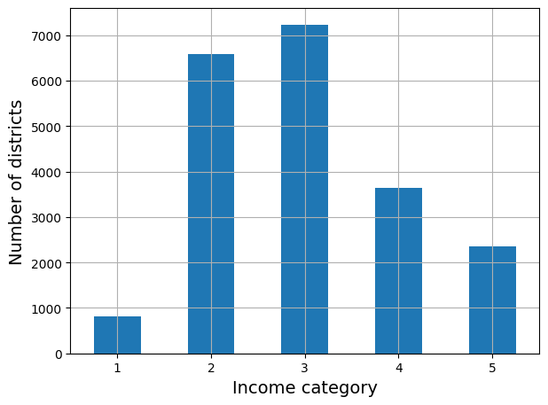
from sklearn.model_selection import StratifiedShuffleSplit
splitter = StratifiedShuffleSplit(n_splits=10, test_size=0.2, random_state=42)
strat_splits = []
for train_index, test_index in splitter.split(housing, housing["income_cat"]):
strat_train_set_n = housing.iloc[train_index]
strat_test_set_n = housing.iloc[test_index]
strat_splits.append([strat_train_set_n, strat_test_set_n])strat_train_set, strat_test_set = strat_splits[0]It’s much shorter to get a single stratified split:
strat_train_set, strat_test_set = train_test_split(
housing, test_size=0.2, stratify=housing["income_cat"], random_state=42)strat_test_set["income_cat"].value_counts() / len(strat_test_set)income_cat
3 0.350533
2 0.318798
4 0.176357
5 0.114341
1 0.039971
Name: count, dtype: float64# extra code – computes the data for Figure 2–10
def income_cat_proportions(data):
return data["income_cat"].value_counts() / len(data)
train_set, test_set = train_test_split(housing, test_size=0.2, random_state=42)
compare_props = pd.DataFrame({
"Overall %": income_cat_proportions(housing),
"Stratified %": income_cat_proportions(strat_test_set),
"Random %": income_cat_proportions(test_set),
}).sort_index()
compare_props.index.name = "Income Category"
compare_props["Strat. Error %"] = (compare_props["Stratified %"] /
compare_props["Overall %"] - 1)
compare_props["Rand. Error %"] = (compare_props["Random %"] /
compare_props["Overall %"] - 1)
(compare_props * 100).round(2)| Overall % | Stratified % | Random % | Strat. Error % | Rand. Error % | |
|---|---|---|---|---|---|
| Income Category | |||||
| 1 | 3.98 | 4.00 | 4.24 | 0.36 | 6.45 |
| 2 | 31.88 | 31.88 | 30.74 | -0.02 | -3.59 |
| 3 | 35.06 | 35.05 | 34.52 | -0.01 | -1.53 |
| 4 | 17.63 | 17.64 | 18.41 | 0.03 | 4.42 |
| 5 | 11.44 | 11.43 | 12.09 | -0.08 | 5.63 |
for set_ in (strat_train_set, strat_test_set):
set_.drop("income_cat", axis=1, inplace=True)housing = strat_train_set.copy()housing.plot(kind="scatter", x="longitude", y="latitude", grid=True)
save_fig("bad_visualization_plot") # extra code
plt.show()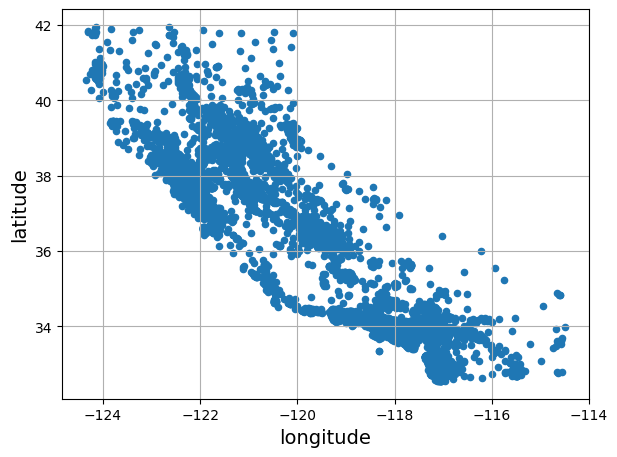
housing.plot(kind="scatter", x="longitude", y="latitude", grid=True, alpha=0.2)
save_fig("better_visualization_plot") # extra code
plt.show()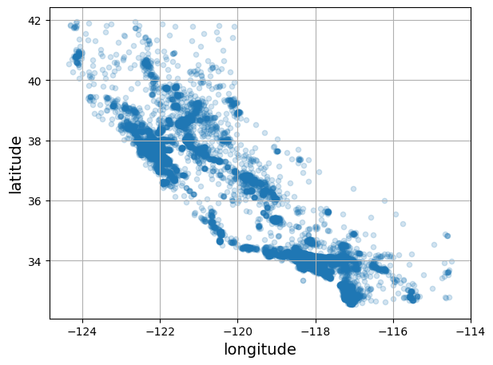
housing.plot(kind="scatter", x="longitude", y="latitude", grid=True,
s=housing["population"] / 100, label="population",
c="median_house_value", cmap="jet", colorbar=True,
legend=True, sharex=False, figsize=(10, 7))
save_fig("housing_prices_scatterplot") # extra code
plt.show()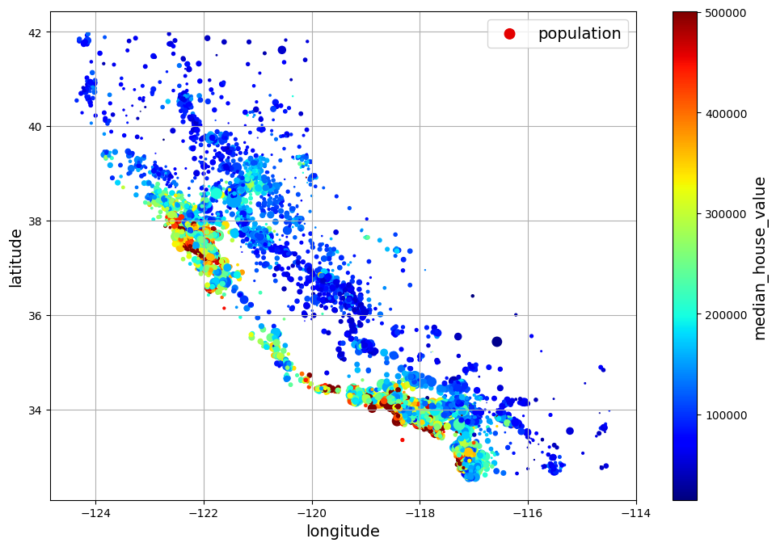
The argument sharex=False fixes a display bug: without it, the x-axis values and label are not displayed (see: https://github.com/pandas-dev/pandas/issues/10611).
The next cell generates the first figure in the chapter (this code is not in the book). It’s just a beautified version of the previous figure, with an image of California added in the background, nicer label names and no grid.
# extra code – this cell generates the first figure in the chapter
# Download the California image
filename = "california.png"
if not (IMAGES_PATH / filename).is_file():
homl3_root = "https://github.com/ageron/handson-ml3/raw/main/"
url = homl3_root + "images/end_to_end_project/" + filename
print("Downloading", filename)
urllib.request.urlretrieve(url, IMAGES_PATH / filename)
housing_renamed = housing.rename(columns={
"latitude": "Latitude", "longitude": "Longitude",
"population": "Population",
"median_house_value": "Median house value (ᴜsᴅ)"})
housing_renamed.plot(
kind="scatter", x="Longitude", y="Latitude",
s=housing_renamed["Population"] / 100, label="Population",
c="Median house value (ᴜsᴅ)", cmap="jet", colorbar=True,
legend=True, sharex=False, figsize=(10, 7))
california_img = plt.imread(IMAGES_PATH / filename)
axis = -124.55, -113.95, 32.45, 42.05
plt.axis(axis)
plt.imshow(california_img, extent=axis)
save_fig("california_housing_prices_plot")
plt.show()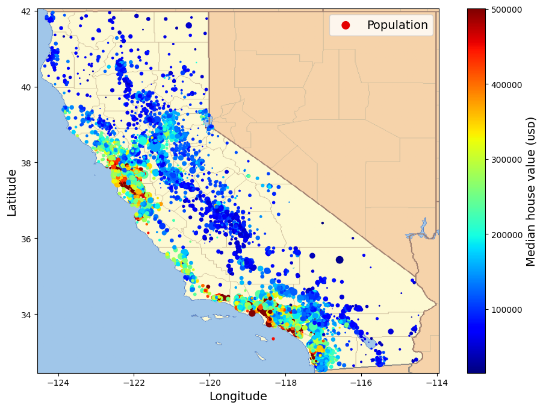
Note: since Pandas 2.0.0, the numeric_only argument defaults to False, so we need to set it explicitly to True to avoid an error.
corr_matrix = housing.corr(numeric_only=True)corr_matrix["median_house_value"].sort_values(ascending=False)median_house_value 1.000000
median_income 0.688380
total_rooms 0.137455
housing_median_age 0.102175
households 0.071426
total_bedrooms 0.054635
population -0.020153
longitude -0.050859
latitude -0.139584
Name: median_house_value, dtype: float64from pandas.plotting import scatter_matrix
attributes = ["median_house_value", "median_income", "total_rooms",
"housing_median_age"]
scatter_matrix(housing[attributes], figsize=(12, 8))
save_fig("scatter_matrix_plot") # extra code
plt.show()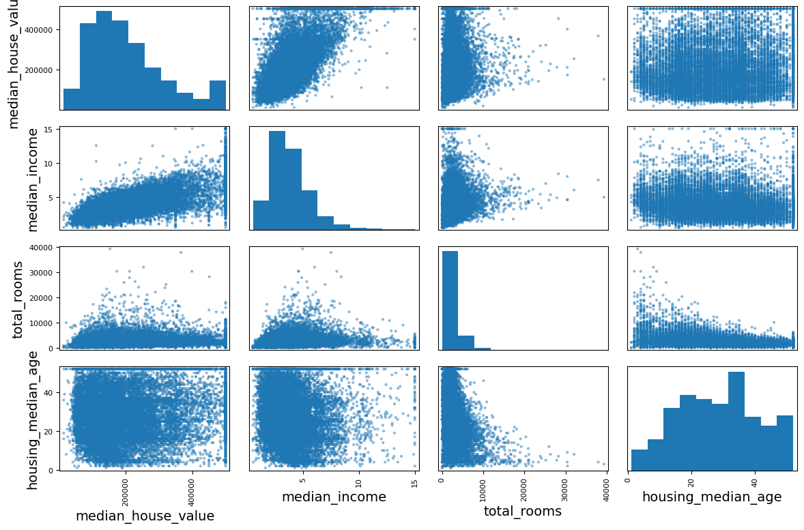
housing.plot(kind="scatter", x="median_income", y="median_house_value",
alpha=0.1, grid=True)
save_fig("income_vs_house_value_scatterplot") # extra code
plt.show()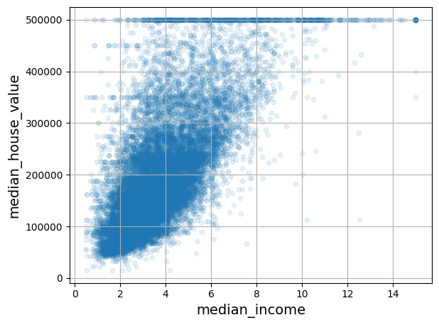
housing["rooms_per_house"] = housing["total_rooms"] / housing["households"]
housing["bedrooms_ratio"] = housing["total_bedrooms"] / housing["total_rooms"]
housing["people_per_house"] = housing["population"] / housing["households"]corr_matrix = housing.corr(numeric_only=True)
corr_matrix["median_house_value"].sort_values(ascending=False)median_house_value 1.000000
median_income 0.688380
rooms_per_house 0.143663
total_rooms 0.137455
housing_median_age 0.102175
households 0.071426
total_bedrooms 0.054635
population -0.020153
people_per_house -0.038224
longitude -0.050859
latitude -0.139584
bedrooms_ratio -0.256397
Name: median_house_value, dtype: float64Let’s revert to the original training set and separate the target (note that strat_train_set.drop() creates a copy of strat_train_set without the column, it doesn’t actually modify strat_train_set itself, unless you pass inplace=True):
housing = strat_train_set.drop("median_house_value", axis=1)
housing_labels = strat_train_set["median_house_value"].copy()In the book 3 options are listed to handle the NaN values:
housing.dropna(subset=["total_bedrooms"], inplace=True) # option 1
housing.drop("total_bedrooms", axis=1) # option 2
median = housing["total_bedrooms"].median() # option 3
housing["total_bedrooms"].fillna(median, inplace=True)For each option, we’ll create a copy of housing and work on that copy to avoid breaking housing. We’ll also show the output of each option, but filtering on the rows that originally contained a NaN value.
null_rows_idx = housing.isnull().any(axis=1)
housing.loc[null_rows_idx].head()| longitude | latitude | housing_median_age | total_rooms | total_bedrooms | population | households | median_income | ocean_proximity | |
|---|---|---|---|---|---|---|---|---|---|
| 14452 | -120.67 | 40.50 | 15.0 | 5343.0 | NaN | 2503.0 | 902.0 | 3.5962 | INLAND |
| 18217 | -117.96 | 34.03 | 35.0 | 2093.0 | NaN | 1755.0 | 403.0 | 3.4115 | <1H OCEAN |
| 11889 | -118.05 | 34.04 | 33.0 | 1348.0 | NaN | 1098.0 | 257.0 | 4.2917 | <1H OCEAN |
| 20325 | -118.88 | 34.17 | 15.0 | 4260.0 | NaN | 1701.0 | 669.0 | 5.1033 | <1H OCEAN |
| 14360 | -117.87 | 33.62 | 8.0 | 1266.0 | NaN | 375.0 | 183.0 | 9.8020 | <1H OCEAN |
housing_option1 = housing.copy()
housing_option1.dropna(subset=["total_bedrooms"], inplace=True) # option 1
housing_option1.loc[null_rows_idx].head()| longitude | latitude | housing_median_age | total_rooms | total_bedrooms | population | households | median_income | ocean_proximity |
|---|
housing_option2 = housing.copy()
housing_option2.drop("total_bedrooms", axis=1, inplace=True) # option 2
housing_option2.loc[null_rows_idx].head()| longitude | latitude | housing_median_age | total_rooms | population | households | median_income | ocean_proximity | |
|---|---|---|---|---|---|---|---|---|
| 14452 | -120.67 | 40.50 | 15.0 | 5343.0 | 2503.0 | 902.0 | 3.5962 | INLAND |
| 18217 | -117.96 | 34.03 | 35.0 | 2093.0 | 1755.0 | 403.0 | 3.4115 | <1H OCEAN |
| 11889 | -118.05 | 34.04 | 33.0 | 1348.0 | 1098.0 | 257.0 | 4.2917 | <1H OCEAN |
| 20325 | -118.88 | 34.17 | 15.0 | 4260.0 | 1701.0 | 669.0 | 5.1033 | <1H OCEAN |
| 14360 | -117.87 | 33.62 | 8.0 | 1266.0 | 375.0 | 183.0 | 9.8020 | <1H OCEAN |
housing_option3 = housing.copy()
median = housing["total_bedrooms"].median()
housing_option3["total_bedrooms"].fillna(median, inplace=True) # option 3
housing_option3.loc[null_rows_idx].head()C:\Users\simon\AppData\Local\Temp\ipykernel_6896\3218827148.py:4: ChainedAssignmentError: A value is being set on a copy of a DataFrame or Series through chained assignment using an inplace method.
Such inplace method never works to update the original DataFrame or Series, because the intermediate object on which we are setting values always behaves as a copy (due to Copy-on-Write).
For example, when doing 'df[col].method(value, inplace=True)', try using 'df.method({col: value}, inplace=True)' instead, to perform the operation inplace on the original object, or try to avoid an inplace operation using 'df[col] = df[col].method(value)'.
See the documentation for a more detailed explanation: https://pandas.pydata.org/pandas-docs/stable/user_guide/copy_on_write.html
housing_option3["total_bedrooms"].fillna(median, inplace=True) # option 3| longitude | latitude | housing_median_age | total_rooms | total_bedrooms | population | households | median_income | ocean_proximity | |
|---|---|---|---|---|---|---|---|---|---|
| 14452 | -120.67 | 40.50 | 15.0 | 5343.0 | NaN | 2503.0 | 902.0 | 3.5962 | INLAND |
| 18217 | -117.96 | 34.03 | 35.0 | 2093.0 | NaN | 1755.0 | 403.0 | 3.4115 | <1H OCEAN |
| 11889 | -118.05 | 34.04 | 33.0 | 1348.0 | NaN | 1098.0 | 257.0 | 4.2917 | <1H OCEAN |
| 20325 | -118.88 | 34.17 | 15.0 | 4260.0 | NaN | 1701.0 | 669.0 | 5.1033 | <1H OCEAN |
| 14360 | -117.87 | 33.62 | 8.0 | 1266.0 | NaN | 375.0 | 183.0 | 9.8020 | <1H OCEAN |
from sklearn.impute import SimpleImputer
imputer = SimpleImputer(strategy="median")Separating out the numerical attributes to use the "median" strategy (as it cannot be calculated on text attributes like ocean_proximity):
housing_num = housing.select_dtypes(include=[np.number])imputer.fit(housing_num)SimpleImputer(strategy='median')In a Jupyter environment, please rerun this cell to show the HTML representation or trust the notebook.
imputer.statistics_array([-118.51 , 34.26 , 29. , 2125. , 434. , 1167. ,
408. , 3.5385])Check that this is the same as manually computing the median of each attribute:
housing_num.median().valuesarray([-118.51 , 34.26 , 29. , 2125. , 434. , 1167. ,
408. , 3.5385])Transform the training set:
X = imputer.transform(housing_num)imputer.feature_names_in_array(['longitude', 'latitude', 'housing_median_age', 'total_rooms',
'total_bedrooms', 'population', 'households', 'median_income'],
dtype=object)housing_tr = pd.DataFrame(X, columns=housing_num.columns,
index=housing_num.index)housing_tr.loc[null_rows_idx].head()| longitude | latitude | housing_median_age | total_rooms | total_bedrooms | population | households | median_income | |
|---|---|---|---|---|---|---|---|---|
| 14452 | -120.67 | 40.50 | 15.0 | 5343.0 | 434.0 | 2503.0 | 902.0 | 3.5962 |
| 18217 | -117.96 | 34.03 | 35.0 | 2093.0 | 434.0 | 1755.0 | 403.0 | 3.4115 |
| 11889 | -118.05 | 34.04 | 33.0 | 1348.0 | 434.0 | 1098.0 | 257.0 | 4.2917 |
| 20325 | -118.88 | 34.17 | 15.0 | 4260.0 | 434.0 | 1701.0 | 669.0 | 5.1033 |
| 14360 | -117.87 | 33.62 | 8.0 | 1266.0 | 434.0 | 375.0 | 183.0 | 9.8020 |
imputer.strategy'median'housing_tr = pd.DataFrame(X, columns=housing_num.columns,
index=housing_num.index)housing_tr.loc[null_rows_idx].head() # not shown in the book| longitude | latitude | housing_median_age | total_rooms | total_bedrooms | population | households | median_income | |
|---|---|---|---|---|---|---|---|---|
| 14452 | -120.67 | 40.50 | 15.0 | 5343.0 | 434.0 | 2503.0 | 902.0 | 3.5962 |
| 18217 | -117.96 | 34.03 | 35.0 | 2093.0 | 434.0 | 1755.0 | 403.0 | 3.4115 |
| 11889 | -118.05 | 34.04 | 33.0 | 1348.0 | 434.0 | 1098.0 | 257.0 | 4.2917 |
| 20325 | -118.88 | 34.17 | 15.0 | 4260.0 | 434.0 | 1701.0 | 669.0 | 5.1033 |
| 14360 | -117.87 | 33.62 | 8.0 | 1266.0 | 434.0 | 375.0 | 183.0 | 9.8020 |
#from sklearn import set_config
#
# set_config(transform_output="pandas") # scikit-learn >= 1.2Now let’s drop some outliers:
from sklearn.ensemble import IsolationForest
isolation_forest = IsolationForest(random_state=42)
outlier_pred = isolation_forest.fit_predict(X)outlier_predarray([-1, 1, 1, ..., 1, 1, 1], shape=(16512,))If you wanted to drop outliers, you would run the following code:
#housing = housing.iloc[outlier_pred == 1]
#housing_labels = housing_labels.iloc[outlier_pred == 1]Now let’s preprocess the categorical input feature, ocean_proximity:
housing_cat = housing[["ocean_proximity"]]
housing_cat.head(8)| ocean_proximity | |
|---|---|
| 13096 | NEAR BAY |
| 14973 | <1H OCEAN |
| 3785 | INLAND |
| 14689 | INLAND |
| 20507 | NEAR OCEAN |
| 1286 | INLAND |
| 18078 | <1H OCEAN |
| 4396 | NEAR BAY |
from sklearn.preprocessing import OrdinalEncoder
ordinal_encoder = OrdinalEncoder()
housing_cat_encoded = ordinal_encoder.fit_transform(housing_cat)housing_cat_encoded[:8]array([[3.],
[0.],
[1.],
[1.],
[4.],
[1.],
[0.],
[3.]])ordinal_encoder.categories_[array(['<1H OCEAN', 'INLAND', 'ISLAND', 'NEAR BAY', 'NEAR OCEAN'],
dtype=object)]from sklearn.preprocessing import OneHotEncoder
cat_encoder = OneHotEncoder()
housing_cat_1hot = cat_encoder.fit_transform(housing_cat)housing_cat_1hot<Compressed Sparse Row sparse matrix of dtype 'float64'
with 16512 stored elements and shape (16512, 5)>By default, the OneHotEncoder class returns a sparse array, but we can convert it to a dense array if needed by calling the toarray() method:
housing_cat_1hot.toarray()array([[0., 0., 0., 1., 0.],
[1., 0., 0., 0., 0.],
[0., 1., 0., 0., 0.],
...,
[0., 0., 0., 0., 1.],
[1., 0., 0., 0., 0.],
[0., 0., 0., 0., 1.]], shape=(16512, 5))Alternatively, you can set sparse_output=False when creating the OneHotEncoder (note: the sparse hyperparameter was renamned to sparse_output in Scikit-Learn 1.2):
cat_encoder = OneHotEncoder(sparse_output=False)
housing_cat_1hot = cat_encoder.fit_transform(housing_cat)
housing_cat_1hotarray([[0., 0., 0., 1., 0.],
[1., 0., 0., 0., 0.],
[0., 1., 0., 0., 0.],
...,
[0., 0., 0., 0., 1.],
[1., 0., 0., 0., 0.],
[0., 0., 0., 0., 1.]], shape=(16512, 5))cat_encoder.categories_[array(['<1H OCEAN', 'INLAND', 'ISLAND', 'NEAR BAY', 'NEAR OCEAN'],
dtype=object)]df_test = pd.DataFrame({"ocean_proximity": ["INLAND", "NEAR BAY"]})
pd.get_dummies(df_test)| ocean_proximity_INLAND | ocean_proximity_NEAR BAY | |
|---|---|---|
| 0 | True | False |
| 1 | False | True |
cat_encoder.transform(df_test)array([[0., 1., 0., 0., 0.],
[0., 0., 0., 1., 0.]])df_test_unknown = pd.DataFrame({"ocean_proximity": ["<2H OCEAN", "ISLAND"]})
pd.get_dummies(df_test_unknown)| ocean_proximity_<2H OCEAN | ocean_proximity_ISLAND | |
|---|---|---|
| 0 | True | False |
| 1 | False | True |
cat_encoder.handle_unknown = "ignore"
cat_encoder.transform(df_test_unknown)array([[0., 0., 0., 0., 0.],
[0., 0., 1., 0., 0.]])cat_encoder.feature_names_in_array(['ocean_proximity'], dtype=object)cat_encoder.get_feature_names_out()array(['ocean_proximity_<1H OCEAN', 'ocean_proximity_INLAND',
'ocean_proximity_ISLAND', 'ocean_proximity_NEAR BAY',
'ocean_proximity_NEAR OCEAN'], dtype=object)df_output = pd.DataFrame(cat_encoder.transform(df_test_unknown),
columns=cat_encoder.get_feature_names_out(),
index=df_test_unknown.index)df_output| ocean_proximity_<1H OCEAN | ocean_proximity_INLAND | ocean_proximity_ISLAND | ocean_proximity_NEAR BAY | ocean_proximity_NEAR OCEAN | |
|---|---|---|---|---|---|
| 0 | 0.0 | 0.0 | 0.0 | 0.0 | 0.0 |
| 1 | 0.0 | 0.0 | 1.0 | 0.0 | 0.0 |
from sklearn.preprocessing import MinMaxScaler
min_max_scaler = MinMaxScaler(feature_range=(-1, 1))
housing_num_min_max_scaled = min_max_scaler.fit_transform(housing_num)from sklearn.preprocessing import StandardScaler
std_scaler = StandardScaler()
housing_num_std_scaled = std_scaler.fit_transform(housing_num)# extra code – this cell generates Figure 2–17
fig, axs = plt.subplots(1, 2, figsize=(8, 3), sharey=True)
housing["population"].hist(ax=axs[0], bins=50)
housing["population"].apply(np.log).hist(ax=axs[1], bins=50)
axs[0].set_xlabel("Population")
axs[1].set_xlabel("Log of population")
axs[0].set_ylabel("Number of districts")
save_fig("long_tail_plot")
plt.show()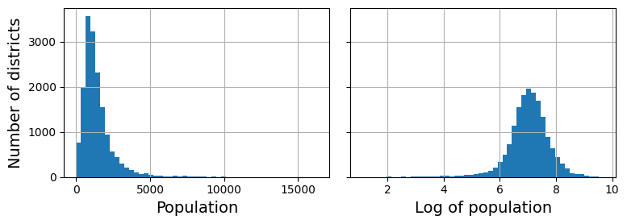
What if we replace each value with its percentile?
# extra code – just shows that we get a uniform distribution
percentiles = [np.percentile(housing["median_income"], p)
for p in range(1, 100)]
flattened_median_income = pd.cut(housing["median_income"],
bins=[-np.inf] + percentiles + [np.inf],
labels=range(1, 100 + 1))
flattened_median_income.hist(bins=50)
plt.xlabel("Median income percentile")
plt.ylabel("Number of districts")
plt.show()
# Note: incomes below the 1st percentile are labeled 1, and incomes above the
# 99th percentile are labeled 100. This is why the distribution below ranges
# from 1 to 100 (not 0 to 100).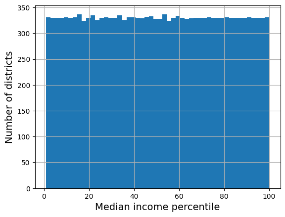
from sklearn.metrics.pairwise import rbf_kernel
age_simil_35 = rbf_kernel(housing[["housing_median_age"]], [[35]], gamma=0.1)# extra code – this cell generates Figure 2–18
ages = np.linspace(housing["housing_median_age"].min(),
housing["housing_median_age"].max(),
500).reshape(-1, 1)
gamma1 = 0.1
gamma2 = 0.03
rbf1 = rbf_kernel(ages, [[35]], gamma=gamma1)
rbf2 = rbf_kernel(ages, [[35]], gamma=gamma2)
fig, ax1 = plt.subplots()
ax1.set_xlabel("Housing median age")
ax1.set_ylabel("Number of districts")
ax1.hist(housing["housing_median_age"], bins=50)
ax2 = ax1.twinx() # create a twin axis that shares the same x-axis
color = "blue"
ax2.plot(ages, rbf1, color=color, label="gamma = 0.10")
ax2.plot(ages, rbf2, color=color, label="gamma = 0.03", linestyle="--")
ax2.tick_params(axis='y', labelcolor=color)
ax2.set_ylabel("Age similarity", color=color)
plt.legend(loc="upper left")
save_fig("age_similarity_plot")
plt.show()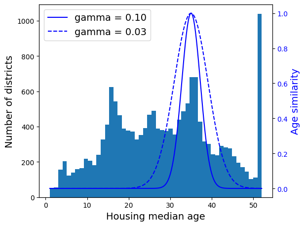
from sklearn.linear_model import LinearRegression
target_scaler = StandardScaler()
scaled_labels = target_scaler.fit_transform(housing_labels.to_frame())
model = LinearRegression()
model.fit(housing[["median_income"]], scaled_labels)
some_new_data = housing[["median_income"]].iloc[:5] # pretend this is new data
scaled_predictions = model.predict(some_new_data)
predictions = target_scaler.inverse_transform(scaled_predictions)predictionsarray([[131997.15275877],
[299359.35844434],
[146023.37185694],
[138840.33653057],
[192016.61557639]])from sklearn.compose import TransformedTargetRegressor
model = TransformedTargetRegressor(LinearRegression(),
transformer=StandardScaler())
model.fit(housing[["median_income"]], housing_labels)
predictions = model.predict(some_new_data)predictionsarray([131997.15275877, 299359.35844434, 146023.37185694, 138840.33653057,
192016.61557639])To create simple transformers:
from sklearn.preprocessing import FunctionTransformer
log_transformer = FunctionTransformer(np.log, inverse_func=np.exp)
log_pop = log_transformer.transform(housing[["population"]])rbf_transformer = FunctionTransformer(rbf_kernel,
kw_args=dict(Y=[[35.]], gamma=0.1))
age_simil_35 = rbf_transformer.transform(housing[["housing_median_age"]])age_simil_35array([[2.81118530e-13],
[8.20849986e-02],
[6.70320046e-01],
...,
[9.55316054e-22],
[6.70320046e-01],
[3.03539138e-04]], shape=(16512, 1))sf_coords = 37.7749, -122.41
sf_transformer = FunctionTransformer(rbf_kernel,
kw_args=dict(Y=[sf_coords], gamma=0.1))
sf_simil = sf_transformer.transform(housing[["latitude", "longitude"]])sf_similarray([[0.999927 ],
[0.05258419],
[0.94864161],
...,
[0.00388525],
[0.05038518],
[0.99868067]], shape=(16512, 1))ratio_transformer = FunctionTransformer(lambda X: X[:, [0]] / X[:, [1]])
ratio_transformer.transform(np.array([[1., 2.], [3., 4.]]))array([[0.5 ],
[0.75]])from sklearn.base import BaseEstimator, TransformerMixin
from sklearn.utils.validation import check_array, check_is_fitted
class StandardScalerClone(BaseEstimator, TransformerMixin):
def __init__(self, with_mean=True): # no *args or **kwargs!
self.with_mean = with_mean
def fit(self, X, y=None): # y is required even though we don't use it
X = check_array(X) # checks that X is an array with finite float values
self.mean_ = X.mean(axis=0)
self.scale_ = X.std(axis=0)
self.n_features_in_ = X.shape[1] # every estimator stores this in fit()
return self # always return self!
def transform(self, X):
check_is_fitted(self) # looks for learned attributes (with trailing _)
X = check_array(X)
assert self.n_features_in_ == X.shape[1]
if self.with_mean:
X = X - self.mean_
return X / self.scale_from sklearn.cluster import KMeans
class ClusterSimilarity(BaseEstimator, TransformerMixin):
def __init__(self, n_clusters=10, gamma=1.0, random_state=None):
self.n_clusters = n_clusters
self.gamma = gamma
self.random_state = random_state
def fit(self, X, y=None, sample_weight=None):
self.kmeans_ = KMeans(self.n_clusters, n_init=10,
random_state=self.random_state)
self.kmeans_.fit(X, sample_weight=sample_weight)
return self # always return self!
def transform(self, X):
return rbf_kernel(X, self.kmeans_.cluster_centers_, gamma=self.gamma)
def get_feature_names_out(self, names=None):
return [f"Cluster {i} similarity" for i in range(self.n_clusters)]Warning: * There was a change in Scikit-Learn 1.3.0 which affected the random number generator for KMeans initialization. Therefore the results will be different than in the book if you use Scikit-Learn ≥ 1.3. That’s not a problem as long as you don’t expect the outputs to be perfectly identical. * Throughout this notebook, when n_init was not set when creating a KMeans estimator, I explicitly set it to n_init=10 to avoid a warning about the fact that the default value for this hyperparameter will change from 10 to "auto" in Scikit-Learn 1.4. * The book was unclear about the fact that setting sample_weight=housing_labels was only meant as an example, it’s not actually used during training. So I remove the sample_weight argument below, and the next figure corresponds to the clusters actually used during training (unlike Figure 2-19 in the book). Sorry if this caused any confusion!
cluster_simil = ClusterSimilarity(n_clusters=10, gamma=1., random_state=42)
similarities = cluster_simil.fit_transform(housing[["latitude", "longitude"]])similarities[:3].round(2)array([[0. , 0.97, 0. , 0. , 0. , 0.08, 0. , 0. , 0.13, 0.57],
[0.12, 0. , 0.98, 0.03, 0. , 0. , 0. , 0.54, 0. , 0. ],
[0. , 0.75, 0. , 0. , 0. , 0.44, 0. , 0. , 0.27, 0.28]])# extra code – this cell generates Figure 2–19
housing_renamed = housing.rename(columns={
"latitude": "Latitude", "longitude": "Longitude",
"population": "Population",
"median_house_value": "Median house value (ᴜsᴅ)"})
housing_renamed["Max cluster similarity"] = similarities.max(axis=1)
housing_renamed.plot(kind="scatter", x="Longitude", y="Latitude", grid=True,
s=housing_renamed["Population"] / 100, label="Population",
c="Max cluster similarity",
cmap="jet", colorbar=True,
legend=True, sharex=False, figsize=(10, 7))
plt.plot(cluster_simil.kmeans_.cluster_centers_[:, 1],
cluster_simil.kmeans_.cluster_centers_[:, 0],
linestyle="", color="black", marker="X", markersize=20,
label="Cluster centers")
plt.legend(loc="upper right")
save_fig("district_cluster_plot")
plt.show()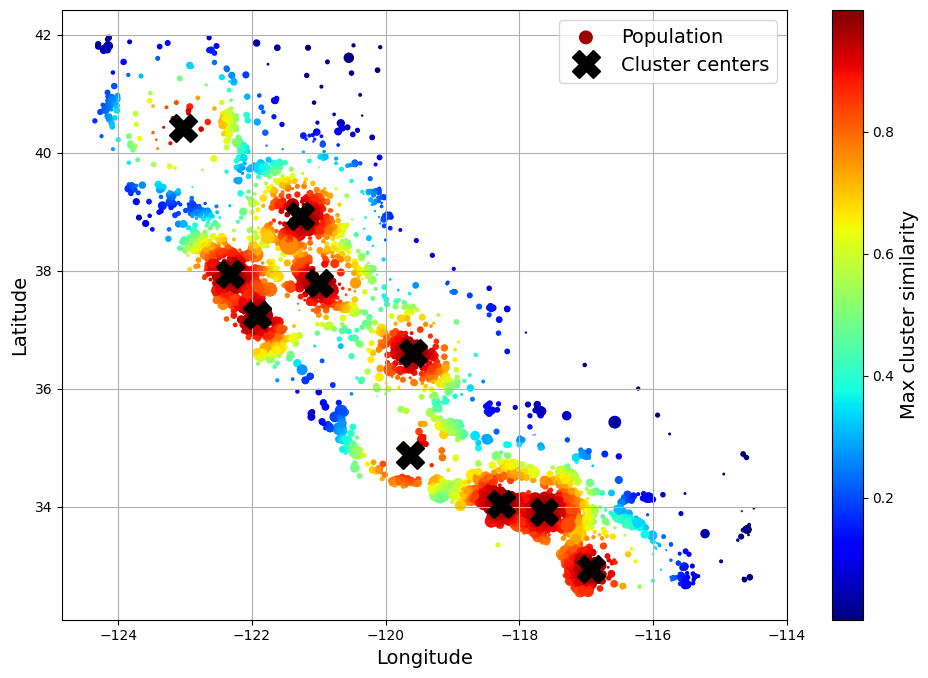
Now let’s build a pipeline to preprocess the numerical attributes:
from sklearn.pipeline import Pipeline
num_pipeline = Pipeline([
("impute", SimpleImputer(strategy="median")),
("standardize", StandardScaler()),
])from sklearn.pipeline import make_pipeline
num_pipeline = make_pipeline(SimpleImputer(strategy="median"), StandardScaler())from sklearn import set_config
set_config(display='diagram')
num_pipelinePipeline(steps=[('simpleimputer', SimpleImputer(strategy='median')),
('standardscaler', StandardScaler())])In a Jupyter environment, please rerun this cell to show the HTML representation or trust the notebook. housing_num_prepared = num_pipeline.fit_transform(housing_num)
housing_num_prepared[:2].round(2)array([[-1.42, 1.01, 1.86, 0.31, 1.37, 0.14, 1.39, -0.94],
[ 0.6 , -0.7 , 0.91, -0.31, -0.44, -0.69, -0.37, 1.17]])def monkey_patch_get_signature_names_out():
"""Monkey patch some classes which did not handle get_feature_names_out()
correctly in Scikit-Learn 1.0.*."""
from inspect import Signature, signature, Parameter
import pandas as pd
from sklearn.impute import SimpleImputer
from sklearn.pipeline import make_pipeline, Pipeline
from sklearn.preprocessing import FunctionTransformer, StandardScaler
default_get_feature_names_out = StandardScaler.get_feature_names_out
if not hasattr(SimpleImputer, "get_feature_names_out"):
print("Monkey-patching SimpleImputer.get_feature_names_out()")
SimpleImputer.get_feature_names_out = default_get_feature_names_out
if not hasattr(FunctionTransformer, "get_feature_names_out"):
print("Monkey-patching FunctionTransformer.get_feature_names_out()")
orig_init = FunctionTransformer.__init__
orig_sig = signature(orig_init)
def __init__(*args, feature_names_out=None, **kwargs):
orig_sig.bind(*args, **kwargs)
orig_init(*args, **kwargs)
args[0].feature_names_out = feature_names_out
__init__.__signature__ = Signature(
list(signature(orig_init).parameters.values()) + [
Parameter("feature_names_out", Parameter.KEYWORD_ONLY)])
def get_feature_names_out(self, names=None):
if callable(self.feature_names_out):
return self.feature_names_out(self, names)
assert self.feature_names_out == "one-to-one"
return default_get_feature_names_out(self, names)
FunctionTransformer.__init__ = __init__
FunctionTransformer.get_feature_names_out = get_feature_names_out
monkey_patch_get_signature_names_out()df_housing_num_prepared = pd.DataFrame(
housing_num_prepared, columns=num_pipeline.get_feature_names_out(),
index=housing_num.index)df_housing_num_prepared.head(2) # extra code| longitude | latitude | housing_median_age | total_rooms | total_bedrooms | population | households | median_income | |
|---|---|---|---|---|---|---|---|---|
| 13096 | -1.423037 | 1.013606 | 1.861119 | 0.311912 | 1.368167 | 0.137460 | 1.394812 | -0.936491 |
| 14973 | 0.596394 | -0.702103 | 0.907630 | -0.308620 | -0.435925 | -0.693771 | -0.373485 | 1.171942 |
num_pipeline.steps[('simpleimputer', SimpleImputer(strategy='median')),
('standardscaler', StandardScaler())]num_pipeline[1]StandardScaler()In a Jupyter environment, please rerun this cell to show the HTML representation or trust the notebook.
num_pipeline[:-1]Pipeline(steps=[('simpleimputer', SimpleImputer(strategy='median'))])In a Jupyter environment, please rerun this cell to show the HTML representation or trust the notebook. num_pipeline.named_steps["simpleimputer"]SimpleImputer(strategy='median')In a Jupyter environment, please rerun this cell to show the HTML representation or trust the notebook.
num_pipeline.set_params(simpleimputer__strategy="median")Pipeline(steps=[('simpleimputer', SimpleImputer(strategy='median')),
('standardscaler', StandardScaler())])In a Jupyter environment, please rerun this cell to show the HTML representation or trust the notebook. from sklearn.compose import ColumnTransformer
num_attribs = ["longitude", "latitude", "housing_median_age", "total_rooms",
"total_bedrooms", "population", "households", "median_income"]
cat_attribs = ["ocean_proximity"]
cat_pipeline = make_pipeline(
SimpleImputer(strategy="most_frequent"),
OneHotEncoder(handle_unknown="ignore"))
preprocessing = ColumnTransformer([
("num", num_pipeline, num_attribs),
("cat", cat_pipeline, cat_attribs),
])from sklearn.compose import make_column_selector, make_column_transformer
preprocessing = make_column_transformer(
(num_pipeline, make_column_selector(dtype_include=np.number)),
(cat_pipeline, make_column_selector(dtype_include=object)),
)housing_prepared = preprocessing.fit_transform(housing)# extra code – shows that we can get a DataFrame out if we want
housing_prepared_fr = pd.DataFrame(
housing_prepared,
columns=preprocessing.get_feature_names_out(),
index=housing.index)
housing_prepared_fr.head(2)| pipeline-1__longitude | pipeline-1__latitude | pipeline-1__housing_median_age | pipeline-1__total_rooms | pipeline-1__total_bedrooms | pipeline-1__population | pipeline-1__households | pipeline-1__median_income | pipeline-2__ocean_proximity_<1H OCEAN | pipeline-2__ocean_proximity_INLAND | pipeline-2__ocean_proximity_ISLAND | pipeline-2__ocean_proximity_NEAR BAY | pipeline-2__ocean_proximity_NEAR OCEAN | |
|---|---|---|---|---|---|---|---|---|---|---|---|---|---|
| 13096 | -1.423037 | 1.013606 | 1.861119 | 0.311912 | 1.368167 | 0.137460 | 1.394812 | -0.936491 | 0.0 | 0.0 | 0.0 | 1.0 | 0.0 |
| 14973 | 0.596394 | -0.702103 | 0.907630 | -0.308620 | -0.435925 | -0.693771 | -0.373485 | 1.171942 | 1.0 | 0.0 | 0.0 | 0.0 | 0.0 |
def column_ratio(X):
return X[:, [0]] / X[:, [1]]
def ratio_name(function_transformer, feature_names_in):
return ["ratio"] # feature names out
def ratio_pipeline():
return make_pipeline(
SimpleImputer(strategy="median"),
FunctionTransformer(column_ratio, feature_names_out=ratio_name),
StandardScaler())
log_pipeline = make_pipeline(
SimpleImputer(strategy="median"),
FunctionTransformer(np.log, feature_names_out="one-to-one"),
StandardScaler())
cluster_simil = ClusterSimilarity(n_clusters=10, gamma=1., random_state=42)
default_num_pipeline = make_pipeline(SimpleImputer(strategy="median"),
StandardScaler())
preprocessing = ColumnTransformer([
("bedrooms", ratio_pipeline(), ["total_bedrooms", "total_rooms"]),
("rooms_per_house", ratio_pipeline(), ["total_rooms", "households"]),
("people_per_house", ratio_pipeline(), ["population", "households"]),
("log", log_pipeline, ["total_bedrooms", "total_rooms", "population",
"households", "median_income"]),
("geo", cluster_simil, ["latitude", "longitude"]),
("cat", cat_pipeline, make_column_selector(dtype_include=object)),
],
remainder=default_num_pipeline) # one column remaining: housing_median_agehousing_prepared = preprocessing.fit_transform(housing)
housing_prepared.shape(16512, 24)preprocessing.get_feature_names_out()array(['bedrooms__ratio', 'rooms_per_house__ratio',
'people_per_house__ratio', 'log__total_bedrooms',
'log__total_rooms', 'log__population', 'log__households',
'log__median_income', 'geo__Cluster 0 similarity',
'geo__Cluster 1 similarity', 'geo__Cluster 2 similarity',
'geo__Cluster 3 similarity', 'geo__Cluster 4 similarity',
'geo__Cluster 5 similarity', 'geo__Cluster 6 similarity',
'geo__Cluster 7 similarity', 'geo__Cluster 8 similarity',
'geo__Cluster 9 similarity', 'cat__ocean_proximity_<1H OCEAN',
'cat__ocean_proximity_INLAND', 'cat__ocean_proximity_ISLAND',
'cat__ocean_proximity_NEAR BAY', 'cat__ocean_proximity_NEAR OCEAN',
'remainder__housing_median_age'], dtype=object)from sklearn.linear_model import LinearRegression
lin_reg = make_pipeline(preprocessing, LinearRegression())
lin_reg.fit(housing, housing_labels)Pipeline(steps=[('columntransformer',
ColumnTransformer(remainder=Pipeline(steps=[('simpleimputer',
SimpleImputer(strategy='median')),
('standardscaler',
StandardScaler())]),
transformers=[('bedrooms',
Pipeline(steps=[('simpleimputer',
SimpleImputer(strategy='median')),
('functiontransformer',
FunctionTransformer(feature_names_out=<function ratio_name at 0x000...
'median_income']),
('geo',
ClusterSimilarity(random_state=42),
['latitude', 'longitude']),
('cat',
Pipeline(steps=[('simpleimputer',
SimpleImputer(strategy='most_frequent')),
('onehotencoder',
OneHotEncoder(handle_unknown='ignore'))]),
<sklearn.compose._column_transformer.make_column_selector object at 0x0000014D74F6F610>)])),
('linearregression', LinearRegression())])In a Jupyter environment, please rerun this cell to show the HTML representation or trust the notebook. ['total_bedrooms', 'total_rooms']
['total_rooms', 'households']
['population', 'households']
['total_bedrooms', 'total_rooms', 'population', 'households', 'median_income']
['latitude', 'longitude']
| n_clusters | 10 | |
| gamma | 1.0 | |
| random_state | 42 |
<sklearn.compose._column_transformer.make_column_selector object at 0x0000014D74F6F610>
['housing_median_age']
Let’s try the full preprocessing pipeline on a few training instances:
housing_predictions = lin_reg.predict(housing)
housing_predictions[:5].round(-2) # -2 = rounded to the nearest hundredarray([242800., 375900., 127500., 99400., 324600.])Compare against the actual values:
housing_labels.iloc[:5].valuesarray([458300., 483800., 101700., 96100., 361800.])# extra code – computes the error ratios discussed in the book
error_ratios = housing_predictions[:5].round(-2) / housing_labels.iloc[:5].values - 1
print(", ".join([f"{100 * ratio:.1f}%" for ratio in error_ratios]))-47.0%, -22.3%, 25.4%, 3.4%, -10.3%Warning: In recent versions of Scikit-Learn, you must use root_mean_squared_error(labels, predictions) to compute the RMSE, instead of mean_squared_error(labels, predictions, squared=False). The following try/except block tries to import root_mean_squared_error, and if it fails it just defines it.
try:
from sklearn.metrics import root_mean_squared_error
except ImportError:
from sklearn.metrics import mean_squared_error
def root_mean_squared_error(labels, predictions):
return mean_squared_error(labels, predictions, squared=False)
lin_rmse = root_mean_squared_error(housing_labels, housing_predictions)
lin_rmse68647.95686706669from sklearn.tree import DecisionTreeRegressor
tree_reg = make_pipeline(preprocessing, DecisionTreeRegressor(random_state=42))
tree_reg.fit(housing, housing_labels)Pipeline(steps=[('columntransformer',
ColumnTransformer(remainder=Pipeline(steps=[('simpleimputer',
SimpleImputer(strategy='median')),
('standardscaler',
StandardScaler())]),
transformers=[('bedrooms',
Pipeline(steps=[('simpleimputer',
SimpleImputer(strategy='median')),
('functiontransformer',
FunctionTransformer(feature_names_out=<function ratio_name at 0x000...
ClusterSimilarity(random_state=42),
['latitude', 'longitude']),
('cat',
Pipeline(steps=[('simpleimputer',
SimpleImputer(strategy='most_frequent')),
('onehotencoder',
OneHotEncoder(handle_unknown='ignore'))]),
<sklearn.compose._column_transformer.make_column_selector object at 0x0000014D74F6F610>)])),
('decisiontreeregressor',
DecisionTreeRegressor(random_state=42))])In a Jupyter environment, please rerun this cell to show the HTML representation or trust the notebook. ['total_bedrooms', 'total_rooms']
['total_rooms', 'households']
['population', 'households']
['total_bedrooms', 'total_rooms', 'population', 'households', 'median_income']
['latitude', 'longitude']
| n_clusters | 10 | |
| gamma | 1.0 | |
| random_state | 42 |
<sklearn.compose._column_transformer.make_column_selector object at 0x0000014D74F6F610>
['housing_median_age']
housing_predictions = tree_reg.predict(housing)
tree_rmse = root_mean_squared_error(housing_labels, housing_predictions)
tree_rmse0.0from sklearn.model_selection import cross_val_score
tree_rmses = -cross_val_score(tree_reg, housing, housing_labels,
scoring="neg_root_mean_squared_error", cv=10)pd.Series(tree_rmses).describe()count 10.000000
mean 67153.318273
std 1963.580924
min 63925.253106
25% 66083.277180
50% 66795.829871
75% 68074.018403
max 70664.635833
dtype: float64# extra code – computes the error stats for the linear model
lin_rmses = -cross_val_score(lin_reg, housing, housing_labels,
scoring="neg_root_mean_squared_error", cv=10)
pd.Series(lin_rmses).describe()count 10.000000
mean 69847.923224
std 4078.407329
min 65659.761079
25% 68088.799156
50% 68697.591463
75% 69800.966364
max 80685.254832
dtype: float64Warning: the following cell may take a few minutes to run:
from sklearn.ensemble import RandomForestRegressor
forest_reg = make_pipeline(preprocessing,
RandomForestRegressor(random_state=42))
forest_rmses = -cross_val_score(forest_reg, housing, housing_labels,
scoring="neg_root_mean_squared_error", cv=10)pd.Series(forest_rmses).describe()count 10.000000
mean 47002.931706
std 1048.451340
min 45667.064036
25% 46494.358345
50% 47093.173938
75% 47274.873814
max 49354.705514
dtype: float64Let’s compare this RMSE measured using cross-validation (the “validation error”) with the RMSE measured on the training set (the “training error”):
forest_reg.fit(housing, housing_labels)
housing_predictions = forest_reg.predict(housing)
forest_rmse = root_mean_squared_error(housing_labels, housing_predictions)
forest_rmse17547.52124624957The training error is much lower than the validation error, which usually means that the model has overfit the training set. Another possible explanation may be that there’s a mismatch between the training data and the validation data, but it’s not the case here, since both came from the same dataset that we shuffled and split in two parts.
Warning: the following cell may take a few minutes to run:
from sklearn.model_selection import GridSearchCV
full_pipeline = Pipeline([
("preprocessing", preprocessing),
("random_forest", RandomForestRegressor(random_state=42)),
])
param_grid = [
{'preprocessing__geo__n_clusters': [5, 8, 10],
'random_forest__max_features': [4, 6, 8]},
{'preprocessing__geo__n_clusters': [10, 15],
'random_forest__max_features': [6, 8, 10]},
]
grid_search = GridSearchCV(full_pipeline, param_grid, cv=3,
scoring='neg_root_mean_squared_error')
grid_search.fit(housing, housing_labels)GridSearchCV(cv=3,
estimator=Pipeline(steps=[('preprocessing',
ColumnTransformer(remainder=Pipeline(steps=[('simpleimputer',
SimpleImputer(strategy='median')),
('standardscaler',
StandardScaler())]),
transformers=[('bedrooms',
Pipeline(steps=[('simpleimputer',
SimpleImputer(strategy='median')),
('functiontransformer',
FunctionTransformer(feature_names_out=<f...
<sklearn.compose._column_transformer.make_column_selector object at 0x0000014D74F6F610>)])),
('random_forest',
RandomForestRegressor(random_state=42))]),
param_grid=[{'preprocessing__geo__n_clusters': [5, 8, 10],
'random_forest__max_features': [4, 6, 8]},
{'preprocessing__geo__n_clusters': [10, 15],
'random_forest__max_features': [6, 8, 10]}],
scoring='neg_root_mean_squared_error')In a Jupyter environment, please rerun this cell to show the HTML representation or trust the notebook. ['total_bedrooms', 'total_rooms']
['total_rooms', 'households']
['population', 'households']
['total_bedrooms', 'total_rooms', 'population', 'households', 'median_income']
['latitude', 'longitude']
| n_clusters | 15 | |
| gamma | 1.0 | |
| random_state | 42 |
<sklearn.compose._column_transformer.make_column_selector object at 0x0000014D67B6C290>
['housing_median_age']
You can get the full list of hyperparameters available for tuning by looking at full_pipeline.get_params().keys():
# extra code – shows part of the output of get_params().keys()
print(str(full_pipeline.get_params().keys())[:1000] + "...")dict_keys(['memory', 'steps', 'transform_input', 'verbose', 'preprocessing', 'random_forest', 'preprocessing__force_int_remainder_cols', 'preprocessing__n_jobs', 'preprocessing__remainder__memory', 'preprocessing__remainder__steps', 'preprocessing__remainder__transform_input', 'preprocessing__remainder__verbose', 'preprocessing__remainder__simpleimputer', 'preprocessing__remainder__standardscaler', 'preprocessing__remainder__simpleimputer__add_indicator', 'preprocessing__remainder__simpleimputer__copy', 'preprocessing__remainder__simpleimputer__fill_value', 'preprocessing__remainder__simpleimputer__keep_empty_features', 'preprocessing__remainder__simpleimputer__missing_values', 'preprocessing__remainder__simpleimputer__strategy', 'preprocessing__remainder__standardscaler__copy', 'preprocessing__remainder__standardscaler__with_mean', 'preprocessing__remainder__standardscaler__with_std', 'preprocessing__remainder', 'preprocessing__sparse_threshold', 'preprocessing__transformer_weights', ...The best hyperparameter combination found:
grid_search.best_params_{'preprocessing__geo__n_clusters': 15, 'random_forest__max_features': 6}grid_search.best_estimator_Let’s look at the score of each hyperparameter combination tested during the grid search:
cv_res = pd.DataFrame(grid_search.cv_results_)
cv_res.sort_values(by="mean_test_score", ascending=False, inplace=True)
# extra code – these few lines of code just make the DataFrame look nicer
cv_res = cv_res[["param_preprocessing__geo__n_clusters",
"param_random_forest__max_features", "split0_test_score",
"split1_test_score", "split2_test_score", "mean_test_score"]]
score_cols = ["split0", "split1", "split2", "mean_test_rmse"]
cv_res.columns = ["n_clusters", "max_features"] + score_cols
cv_res[score_cols] = -cv_res[score_cols].round().astype(np.int64)
cv_res.head()| n_clusters | max_features | split0 | split1 | split2 | mean_test_rmse | |
|---|---|---|---|---|---|---|
| 12 | 15 | 6 | 43536 | 43753 | 44569 | 43953 |
| 13 | 15 | 8 | 44084 | 44205 | 44863 | 44384 |
| 14 | 15 | 10 | 44368 | 44496 | 45200 | 44688 |
| 7 | 10 | 6 | 44251 | 44628 | 45857 | 44912 |
| 9 | 10 | 6 | 44251 | 44628 | 45857 | 44912 |
from sklearn.experimental import enable_halving_search_cv
from sklearn.model_selection import HalvingRandomSearchCVTry 30 (n_iter × cv) random combinations of hyperparameters:
Warning: the following cell may take a few minutes to run:
from sklearn.model_selection import RandomizedSearchCV
from scipy.stats import randint
param_distribs = {'preprocessing__geo__n_clusters': randint(low=3, high=50),
'random_forest__max_features': randint(low=2, high=20)}
rnd_search = RandomizedSearchCV(
full_pipeline, param_distributions=param_distribs, n_iter=10, cv=3,
scoring='neg_root_mean_squared_error', random_state=42)
rnd_search.fit(housing, housing_labels)RandomizedSearchCV(cv=3,
estimator=Pipeline(steps=[('preprocessing',
ColumnTransformer(remainder=Pipeline(steps=[('simpleimputer',
SimpleImputer(strategy='median')),
('standardscaler',
StandardScaler())]),
transformers=[('bedrooms',
Pipeline(steps=[('simpleimputer',
SimpleImputer(strategy='median')),
('functiontransformer',
FunctionTransformer(feature_names_...
('random_forest',
RandomForestRegressor(random_state=42))]),
param_distributions={'preprocessing__geo__n_clusters': <scipy.stats._distn_infrastructure.rv_discrete_frozen object at 0x0000014D74F6D810>,
'random_forest__max_features': <scipy.stats._distn_infrastructure.rv_discrete_frozen object at 0x0000014D60ECFBB0>},
random_state=42, scoring='neg_root_mean_squared_error')In a Jupyter environment, please rerun this cell to show the HTML representation or trust the notebook. ['total_bedrooms', 'total_rooms']
['total_rooms', 'households']
['population', 'households']
['total_bedrooms', 'total_rooms', 'population', 'households', 'median_income']
['latitude', 'longitude']
| n_clusters | 45 | |
| gamma | 1.0 | |
| random_state | 42 |
<sklearn.compose._column_transformer.make_column_selector object at 0x0000014D67DE7BF0>
['housing_median_age']
# extra code – displays the random search results
cv_res = pd.DataFrame(rnd_search.cv_results_)
cv_res.sort_values(by="mean_test_score", ascending=False, inplace=True)
cv_res = cv_res[["param_preprocessing__geo__n_clusters",
"param_random_forest__max_features", "split0_test_score",
"split1_test_score", "split2_test_score", "mean_test_score"]]
cv_res.columns = ["n_clusters", "max_features"] + score_cols
cv_res[score_cols] = -cv_res[score_cols].round().astype(np.int64)
cv_res.head()| n_clusters | max_features | split0 | split1 | split2 | mean_test_rmse | |
|---|---|---|---|---|---|---|
| 1 | 45 | 9 | 41115 | 42151 | 42695 | 41987 |
| 8 | 32 | 7 | 41604 | 42200 | 43219 | 42341 |
| 0 | 41 | 16 | 42106 | 42743 | 43443 | 42764 |
| 5 | 42 | 4 | 41812 | 42925 | 43557 | 42765 |
| 2 | 23 | 8 | 42421 | 43094 | 43856 | 43124 |
Bonus section: how to choose the sampling distribution for a hyperparameter
scipy.stats.randint(a, b+1): for hyperparameters with discrete values that range from a to b, and all values in that range seem equally likely.scipy.stats.uniform(a, b): this is very similar, but for continuous hyperparameters.scipy.stats.geom(1 / scale): for discrete values, when you want to sample roughly in a given scale. E.g., with scale=1000 most samples will be in this ballpark, but ~10% of all samples will be <100 and ~10% will be >2300.scipy.stats.expon(scale): this is the continuous equivalent of geom. Just set scale to the most likely value.scipy.stats.loguniform(a, b): when you have almost no idea what the optimal hyperparameter value’s scale is. If you set a=0.01 and b=100, then you’re just as likely to sample a value between 0.01 and 0.1 as a value between 10 and 100.Here are plots of the probability mass functions (for discrete variables), and probability density functions (for continuous variables) for randint(), uniform(), geom() and expon():
# extra code – plots a few distributions you can use in randomized search
from scipy.stats import randint, uniform, geom, expon
xs1 = np.arange(0, 7 + 1)
randint_distrib = randint(0, 7 + 1).pmf(xs1)
xs2 = np.linspace(0, 7, 500)
uniform_distrib = uniform(0, 7).pdf(xs2)
xs3 = np.arange(0, 7 + 1)
geom_distrib = geom(0.5).pmf(xs3)
xs4 = np.linspace(0, 7, 500)
expon_distrib = expon(scale=1).pdf(xs4)
plt.figure(figsize=(12, 7))
plt.subplot(2, 2, 1)
plt.bar(xs1, randint_distrib, label="scipy.randint(0, 7 + 1)")
plt.ylabel("Probability")
plt.legend()
plt.axis([-1, 8, 0, 0.2])
plt.subplot(2, 2, 2)
plt.fill_between(xs2, uniform_distrib, label="scipy.uniform(0, 7)")
plt.ylabel("PDF")
plt.legend()
plt.axis([-1, 8, 0, 0.2])
plt.subplot(2, 2, 3)
plt.bar(xs3, geom_distrib, label="scipy.geom(0.5)")
plt.xlabel("Hyperparameter value")
plt.ylabel("Probability")
plt.legend()
plt.axis([0, 7, 0, 1])
plt.subplot(2, 2, 4)
plt.fill_between(xs4, expon_distrib, label="scipy.expon(scale=1)")
plt.xlabel("Hyperparameter value")
plt.ylabel("PDF")
plt.legend()
plt.axis([0, 7, 0, 1])
plt.show()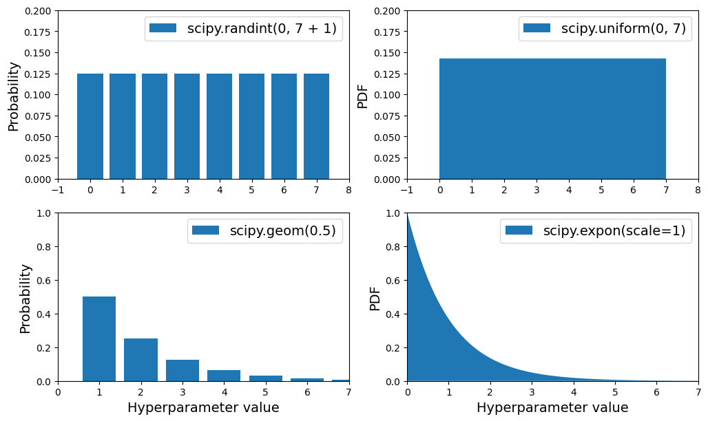
Here are the PDF for expon() and loguniform() (left column), as well as the PDF of log(X) (right column). The right column shows the distribution of hyperparameter scales. You can see that expon() favors hyperparameters with roughly the desired scale, with a longer tail towards the smaller scales. But loguniform() does not favor any scale, they are all equally likely:
# extra code – shows the difference between expon and loguniform
from scipy.stats import loguniform
xs1 = np.linspace(0, 7, 500)
expon_distrib = expon(scale=1).pdf(xs1)
log_xs2 = np.linspace(-5, 3, 500)
log_expon_distrib = np.exp(log_xs2 - np.exp(log_xs2))
xs3 = np.linspace(0.001, 1000, 500)
loguniform_distrib = loguniform(0.001, 1000).pdf(xs3)
log_xs4 = np.linspace(np.log(0.001), np.log(1000), 500)
log_loguniform_distrib = uniform(np.log(0.001), np.log(1000)).pdf(log_xs4)
plt.figure(figsize=(12, 7))
plt.subplot(2, 2, 1)
plt.fill_between(xs1, expon_distrib,
label="scipy.expon(scale=1)")
plt.ylabel("PDF")
plt.legend()
plt.axis([0, 7, 0, 1])
plt.subplot(2, 2, 2)
plt.fill_between(log_xs2, log_expon_distrib,
label="log(X) with X ~ expon")
plt.legend()
plt.axis([-5, 3, 0, 1])
plt.subplot(2, 2, 3)
plt.fill_between(xs3, loguniform_distrib,
label="scipy.loguniform(0.001, 1000)")
plt.xlabel("Hyperparameter value")
plt.ylabel("PDF")
plt.legend()
plt.axis([0.001, 1000, 0, 0.005])
plt.subplot(2, 2, 4)
plt.fill_between(log_xs4, log_loguniform_distrib,
label="log(X) with X ~ loguniform")
plt.xlabel("Log of hyperparameter value")
plt.legend()
plt.axis([-8, 1, 0, 0.2])
plt.show()final_model = rnd_search.best_estimator_ # includes preprocessing
feature_importances = final_model["random_forest"].feature_importances_
feature_importances.round(2)array([0.06, 0.06, 0.05, 0.01, 0.01, 0.01, 0.01, 0.19, 0.01, 0.01, 0.02,
0.04, 0.01, 0. , 0.02, 0.01, 0.01, 0.01, 0.01, 0.01, 0. , 0. ,
0.01, 0. , 0.01, 0.02, 0.02, 0.01, 0.01, 0.01, 0.03, 0.01, 0.01,
0.01, 0.01, 0.01, 0.01, 0. , 0.01, 0.01, 0.02, 0.01, 0.01, 0.01,
0.01, 0.01, 0.01, 0.01, 0.01, 0.01, 0.01, 0.01, 0.01, 0. , 0.08,
0. , 0. , 0. , 0.01])sorted(zip(feature_importances,
final_model["preprocessing"].get_feature_names_out()),
reverse=True)[(np.float64(0.1898423270105783), 'log__median_income'),
(np.float64(0.07709175866873944), 'cat__ocean_proximity_INLAND'),
(np.float64(0.06455488601956336), 'bedrooms__ratio'),
(np.float64(0.056936146643377976), 'rooms_per_house__ratio'),
(np.float64(0.0490294770805355), 'people_per_house__ratio'),
(np.float64(0.03807069074492323), 'geo__Cluster 3 similarity'),
(np.float64(0.025643913400094472), 'geo__Cluster 22 similarity'),
(np.float64(0.02179127543243723), 'geo__Cluster 17 similarity'),
(np.float64(0.021575251507503695), 'geo__Cluster 6 similarity'),
(np.float64(0.017868654556924362), 'geo__Cluster 2 similarity'),
(np.float64(0.017431400050755975), 'geo__Cluster 32 similarity'),
(np.float64(0.015981159400591683), 'geo__Cluster 18 similarity'),
(np.float64(0.014888464257396877), 'geo__Cluster 40 similarity'),
(np.float64(0.014488389218107146), 'geo__Cluster 43 similarity'),
(np.float64(0.014252940099964142), 'geo__Cluster 7 similarity'),
(np.float64(0.014038173319370725), 'geo__Cluster 21 similarity'),
(np.float64(0.013846025114732161), 'geo__Cluster 38 similarity'),
(np.float64(0.013625709964722737), 'geo__Cluster 34 similarity'),
(np.float64(0.013547297167034428), 'geo__Cluster 41 similarity'),
(np.float64(0.01290008902606692), 'geo__Cluster 24 similarity'),
(np.float64(0.012620908145579916), 'geo__Cluster 10 similarity'),
(np.float64(0.011621275372313349), 'remainder__housing_median_age'),
(np.float64(0.01159076532124518), 'geo__Cluster 42 similarity'),
(np.float64(0.011475471902949968), 'geo__Cluster 30 similarity'),
(np.float64(0.011145862167873194), 'geo__Cluster 31 similarity'),
(np.float64(0.011019562821385253), 'geo__Cluster 16 similarity'),
(np.float64(0.010872453237288457), 'geo__Cluster 1 similarity'),
(np.float64(0.010683824851366689), 'geo__Cluster 25 similarity'),
(np.float64(0.010600464117395158), 'geo__Cluster 26 similarity'),
(np.float64(0.010233275929521548), 'geo__Cluster 20 similarity'),
(np.float64(0.010009049876772752), 'geo__Cluster 35 similarity'),
(np.float64(0.009948648710662759), 'geo__Cluster 14 similarity'),
(np.float64(0.009237024861905358), 'geo__Cluster 39 similarity'),
(np.float64(0.009095509036677479), 'geo__Cluster 37 similarity'),
(np.float64(0.009039692793107918), 'geo__Cluster 0 similarity'),
(np.float64(0.008824238591690453), 'geo__Cluster 8 similarity'),
(np.float64(0.0088028519810115), 'geo__Cluster 9 similarity'),
(np.float64(0.00865735444375151), 'geo__Cluster 36 similarity'),
(np.float64(0.008468774649648216), 'geo__Cluster 28 similarity'),
(np.float64(0.008132158692323862), 'geo__Cluster 44 similarity'),
(np.float64(0.00806872019824202), 'geo__Cluster 4 similarity'),
(np.float64(0.007900076467114424), 'geo__Cluster 11 similarity'),
(np.float64(0.007654000251882609), 'log__total_rooms'),
(np.float64(0.007117524274343566), 'log__population'),
(np.float64(0.0068285120798726555), 'log__total_bedrooms'),
(np.float64(0.006436845508698041), 'log__households'),
(np.float64(0.00606171524521791), 'geo__Cluster 23 similarity'),
(np.float64(0.005534308195396936), 'geo__Cluster 19 similarity'),
(np.float64(0.00549408919549185), 'geo__Cluster 27 similarity'),
(np.float64(0.005208991562944558), 'geo__Cluster 33 similarity'),
(np.float64(0.004814425966149222), 'geo__Cluster 15 similarity'),
(np.float64(0.004210239717026306), 'geo__Cluster 12 similarity'),
(np.float64(0.004038656871498407), 'geo__Cluster 13 similarity'),
(np.float64(0.00373031587904682), 'geo__Cluster 29 similarity'),
(np.float64(0.003249851526492918), 'cat__ocean_proximity_<1H OCEAN'),
(np.float64(0.0019737553218329078), 'geo__Cluster 5 similarity'),
(np.float64(0.0018976773551793616), 'cat__ocean_proximity_NEAR OCEAN'),
(np.float64(0.0002358514810131378), 'cat__ocean_proximity_NEAR BAY'),
(np.float64(6.124671466559031e-05), 'cat__ocean_proximity_ISLAND')]X_test = strat_test_set.drop("median_house_value", axis=1)
y_test = strat_test_set["median_house_value"].copy()
final_predictions = final_model.predict(X_test)
final_rmse = root_mean_squared_error(y_test, final_predictions)
print(final_rmse)41549.20158097943We can compute a 95% confidence interval for the test RMSE:
from scipy import stats
def rmse(squared_errors):
return np.sqrt(np.mean(squared_errors))
confidence = 0.95
squared_errors = (final_predictions - y_test) ** 2
boot_result = stats.bootstrap([squared_errors], rmse,
confidence_level=confidence, random_state=42)
rmse_lower, rmse_upper = boot_result.confidence_intervalrmse_lower, rmse_upper(np.float64(39579.4379532319), np.float64(43805.02861542037))Save the final model:
import joblib
joblib.dump(final_model, "my_california_housing_model.pkl")['my_california_housing_model.pkl']Now you can deploy this model to production. For example, the following code could be a script that would run in production:
import joblib
# extra code – excluded for conciseness
from sklearn.cluster import KMeans
from sklearn.base import BaseEstimator, TransformerMixin
from sklearn.metrics.pairwise import rbf_kernel
def column_ratio(X):
return X[:, [0]] / X[:, [1]]
#class ClusterSimilarity(BaseEstimator, TransformerMixin):
# [...]
final_model_reloaded = joblib.load("my_california_housing_model.pkl")
new_data = housing.iloc[:5] # pretend these are new districts
predictions = final_model_reloaded.predict(new_data)predictionsYou could use pickle instead, but joblib is more efficient.
Exercise: Try a Support Vector Machine regressor (sklearn.svm.SVR) with various hyperparameters, such as kernel="linear" (with various values for the C hyperparameter) or kernel="rbf" (with various values for the C and gamma hyperparameters). Note that SVMs don’t scale well to large datasets, so you should probably train your model on just the first 5,000 instances of the training set and use only 3-fold cross-validation, or else it will take hours. Don’t worry about what the hyperparameters mean for now (see the SVM notebook if you’re interested). How does the best SVR predictor perform?
from sklearn.model_selection import GridSearchCV
from sklearn.svm import SVR
param_grid = [
{'svr__kernel': ['linear'], 'svr__C': [10., 30., 100., 300., 1000.,
3000., 10000., 30000.0]},
{'svr__kernel': ['rbf'], 'svr__C': [1.0, 3.0, 10., 30., 100., 300.,
1000.0],
'svr__gamma': [0.01, 0.03, 0.1, 0.3, 1.0, 3.0]},
]
svr_pipeline = Pipeline([("preprocessing", preprocessing), ("svr", SVR())])
grid_search = GridSearchCV(svr_pipeline, param_grid, cv=3,
scoring='neg_root_mean_squared_error')
grid_search.fit(housing.iloc[:5000], housing_labels.iloc[:5000])The best model achieves the following score (evaluated using 3-fold cross validation):
svr_grid_search_rmse = -grid_search.best_score_
svr_grid_search_rmseThat’s much worse than the RandomForestRegressor (but to be fair, we trained the model on much less data). Let’s check the best hyperparameters found:
grid_search.best_params_The linear kernel seems better than the RBF kernel. Notice that the value of C is the maximum tested value. When this happens you definitely want to launch the grid search again with higher values for C (removing the smallest values), because it is likely that higher values of C will be better.
Exercise: Try replacing the GridSearchCV with a RandomizedSearchCV.
Warning: the following cell will take several minutes to run. You can specify verbose=2 when creating the RandomizedSearchCV if you want to see the training details.
from sklearn.model_selection import RandomizedSearchCV
from scipy.stats import expon, loguniform
# see https://docs.scipy.org/doc/scipy/reference/stats.html
# for `expon()` and `loguniform()` documentation and more probability distribution functions.
# Note: gamma is ignored when kernel is "linear"
param_distribs = {
'svr__kernel': ['linear', 'rbf'],
'svr__C': loguniform(20, 200_000),
'svr__gamma': expon(scale=1.0),
}
rnd_search = RandomizedSearchCV(svr_pipeline,
param_distributions=param_distribs,
n_iter=50, cv=3,
scoring='neg_root_mean_squared_error',
random_state=42)
rnd_search.fit(housing.iloc[:5000], housing_labels.iloc[:5000])The best model achieves the following score (evaluated using 3-fold cross validation):
svr_rnd_search_rmse = -rnd_search.best_score_
svr_rnd_search_rmseNow that’s really much better, but still far from the RandomForestRegressor’s performance. Let’s check the best hyperparameters found:
rnd_search.best_params_This time the search found a good set of hyperparameters for the RBF kernel. Randomized search tends to find better hyperparameters than grid search in the same amount of time.
Note that we used the expon() distribution for gamma, with a scale of 1, so RandomSearch mostly searched for values roughly of that scale: about 80% of the samples were between 0.1 and 2.3 (roughly 10% were smaller and 10% were larger):
np.random.seed(42)
s = expon(scale=1).rvs(100_000) # get 100,000 samples
((s > 0.105) & (s < 2.29)).sum() / 100_000We used the loguniform() distribution for C, meaning we did not have a clue what the optimal scale of C was before running the random search. It explored the range from 20 to 200 just as much as the range from 2,000 to 20,000 or from 20,000 to 200,000.
Exercise: Try adding a SelectFromModel transformer in the preparation pipeline to select only the most important attributes.
Let’s create a new pipeline that runs the previously defined preparation pipeline, and adds a SelectFromModel transformer based on a RandomForestRegressor before the final regressor:
from sklearn.feature_selection import SelectFromModel
selector_pipeline = Pipeline([
('preprocessing', preprocessing),
('selector', SelectFromModel(RandomForestRegressor(random_state=42),
threshold=0.005)), # min feature importance
('svr', SVR(C=rnd_search.best_params_["svr__C"],
gamma=rnd_search.best_params_["svr__gamma"],
kernel=rnd_search.best_params_["svr__kernel"])),
])selector_rmses = -cross_val_score(selector_pipeline,
housing.iloc[:5000],
housing_labels.iloc[:5000],
scoring="neg_root_mean_squared_error",
cv=3)
pd.Series(selector_rmses).describe()Oh well, feature selection does not seem to help. But maybe that’s just because the threshold we used was not optimal. Perhaps try tuning it using random search or grid search?
Exercise: Try creating a custom transformer that trains a k-Nearest Neighbors regressor (sklearn.neighbors.KNeighborsRegressor) in its fit() method, and outputs the model’s predictions in its transform() method. Then add this feature to the preprocessing pipeline, using latitude and longitude as the inputs to this transformer. This will add a feature in the model that corresponds to the housing median price of the nearest districts.
Rather than restrict ourselves to k-Nearest Neighbors regressors, let’s create a transformer that accepts any regressor. For this, we can extend the MetaEstimatorMixin and have a required estimator argument in the constructor. The fit() method must work on a clone of this estimator, and it must also save feature_names_in_. The MetaEstimatorMixin will ensure that estimator is listed as a required parameters, and it will update get_params() and set_params() to make the estimator’s hyperparameters available for tuning. Lastly, we create a get_feature_names_out() method: the output column name is the …
from sklearn.neighbors import KNeighborsRegressor
from sklearn.base import MetaEstimatorMixin, clone
from sklearn.utils.validation import check_array
class FeatureFromRegressor(MetaEstimatorMixin, TransformerMixin, BaseEstimator):
def __init__(self, estimator):
self.estimator = estimator
def fit(self, X, y=None):
check_array(X)
self.estimator_ = clone(self.estimator)
self.estimator_.fit(X, y)
self.n_features_in_ = self.estimator_.n_features_in_
if hasattr(self.estimator_, "feature_names_in_"):
self.feature_names_in_ = self.estimator_.feature_names_in_
return self # always return self!
def transform(self, X):
check_is_fitted(self)
predictions = self.estimator_.predict(X)
if predictions.ndim == 1:
predictions = predictions.reshape(-1, 1)
return predictions
def get_feature_names_out(self, names=None):
check_is_fitted(self)
n_outputs = getattr(self.estimator_, "n_outputs_", 1)
estimator_class_name = self.estimator_.__class__.__name__
estimator_short_name = estimator_class_name.lower().replace("_", "")
return [f"{estimator_short_name}_prediction_{i}"
for i in range(n_outputs)]Let’s ensure it complies to Scikit-Learn’s API:
from sklearn.utils.estimator_checks import check_estimator
test_results = check_estimator(FeatureFromRegressor(KNeighborsRegressor()))Good! Now let’s test it:
knn_reg = KNeighborsRegressor(n_neighbors=3, weights="distance")
knn_transformer = FeatureFromRegressor(knn_reg)
geo_features = housing[["latitude", "longitude"]]
knn_transformer.fit_transform(geo_features, housing_labels)And what does its output feature name look like?
knn_transformer.get_feature_names_out()Okay, now let’s include this transformer in our preprocessing pipeline:
from sklearn.base import clone
transformers = [(name, clone(transformer), columns)
for name, transformer, columns in preprocessing.transformers]
geo_index = [name for name, _, _ in transformers].index("geo")
transformers[geo_index] = ("geo", knn_transformer, ["latitude", "longitude"])
new_geo_preprocessing = ColumnTransformer(transformers)new_geo_pipeline = Pipeline([
('preprocessing', new_geo_preprocessing),
('svr', SVR(C=rnd_search.best_params_["svr__C"],
gamma=rnd_search.best_params_["svr__gamma"],
kernel=rnd_search.best_params_["svr__kernel"])),
])new_pipe_rmses = -cross_val_score(new_geo_pipeline,
housing.iloc[:5000],
housing_labels.iloc[:5000],
scoring="neg_root_mean_squared_error",
cv=3)
pd.Series(new_pipe_rmses).describe()Yikes, that’s terrible! Apparently the cluster similarity features were much better. But perhaps we should tune the KNeighborsRegressor’s hyperparameters? That’s what the next exercise is about.
Exercise: Automatically explore some preparation options using RandomSearchCV.
param_distribs = {
"preprocessing__geo__estimator__n_neighbors": range(1, 30),
"preprocessing__geo__estimator__weights": ["distance", "uniform"],
"svr__C": loguniform(20, 200_000),
"svr__gamma": expon(scale=1.0),
}
new_geo_rnd_search = RandomizedSearchCV(new_geo_pipeline,
param_distributions=param_distribs,
n_iter=50,
cv=3,
scoring='neg_root_mean_squared_error',
random_state=42)
new_geo_rnd_search.fit(housing.iloc[:5000], housing_labels.iloc[:5000])new_geo_rnd_search_rmse = -new_geo_rnd_search.best_score_
new_geo_rnd_search_rmseOh well… at least we tried! It looks like the cluster similarity features are definitely better than the KNN feature. But perhaps you could try having both? And maybe training on the full training set would help as well.
Exercise: Try to implement the StandardScalerClone class again from scratch, then add support for the inverse_transform() method: executing scaler.inverse_transform(scaler.fit_transform(X)) should return an array very close to X. Then add support for feature names: set feature_names_in_ in the fit() method if the input is a DataFrame. This attribute should be a NumPy array of column names. Lastly, implement the get_feature_names_out() method: it should have one optional input_features=None argument. If passed, the method should check that its length matches n_features_in_, and it should match feature_names_in_ if it is defined, then input_features should be returned. If input_features is None, then the method should return feature_names_in_ if it is defined or np.array(["x0", "x1", ...]) with length n_features_in_ otherwise.
import numpy as np
from sklearn.base import BaseEstimator, TransformerMixin
from sklearn.utils.validation import check_is_fitted, validate_data
class StandardScalerClone(TransformerMixin, BaseEstimator):
def __init__(self, with_mean=True): # no *args or **kwargs!
self.with_mean = with_mean
def fit(self, X, y=None):
X = validate_data(self, X, ensure_2d=True)
self.n_features_in_ = X.shape[1]
if self.with_mean:
self.mean_ = np.mean(X, axis=0)
self.scale_ = np.std(X, axis=0, ddof=0)
self.scale_[self.scale_ == 0] = 1 # Avoid division by zero
return self
def transform(self, X):
check_is_fitted(self)
X = validate_data(self, X, ensure_2d=True, reset=False)
if self.with_mean:
X = X - self.mean_
return X / self.scale_
def inverse_transform(self, X):
check_is_fitted(self)
X = validate_data(self, X, ensure_2d=True, reset=False)
X = X * self.scale_
if self.with_mean:
X = X + self.mean_
return X
def get_feature_names_out(self, input_features=None):
if input_features is None:
return getattr(self, "feature_names_in_",
[f"x{i}" for i in range(self.n_features_in_)])
else:
if len(input_features) != self.n_features_in_:
raise ValueError("Invalid number of features")
if hasattr(self, "feature_names_in_") and not np.all(
self.feature_names_in_ == input_features
):
raise ValueError("input_features ≠ feature_names_in_")
return input_featuresLet’s test our custom transformer:
from sklearn.utils.estimator_checks import check_estimator
check_estimator(StandardScalerClone())No errors, that’s a great start, we respect the Scikit-Learn API.
Now let’s ensure the transformation works as expected:
np.random.seed(42)
X = np.random.rand(1000, 3)
scaler = StandardScalerClone()
X_scaled = scaler.fit_transform(X)
assert np.allclose(X_scaled, (X - X.mean(axis=0)) / X.std(axis=0))How about setting with_mean=False?
scaler = StandardScalerClone(with_mean=False)
X_scaled_uncentered = scaler.fit_transform(X)
assert np.allclose(X_scaled_uncentered, X / X.std(axis=0))And does the inverse work?
scaler = StandardScalerClone()
X_back = scaler.inverse_transform(scaler.fit_transform(X))
assert np.allclose(X, X_back)How about the feature names out?
assert np.all(scaler.get_feature_names_out() == ["x0", "x1", "x2"])
assert np.all(scaler.get_feature_names_out(["a", "b", "c"]) == ["a", "b", "c"])And if we fit a DataFrame, are the feature in and out ok?
df = pd.DataFrame({"a": np.random.rand(100), "b": np.random.rand(100)})
scaler = StandardScalerClone()
X_scaled = scaler.fit_transform(df)
assert np.all(scaler.feature_names_in_ == ["a", "b"])
assert np.all(scaler.get_feature_names_out() == ["a", "b"])All good! That’s all for today! 😀
Congratulations! You already know quite a lot about Machine Learning. :)